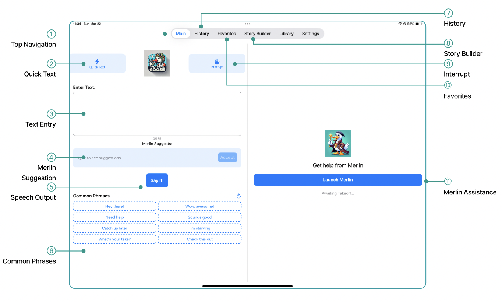
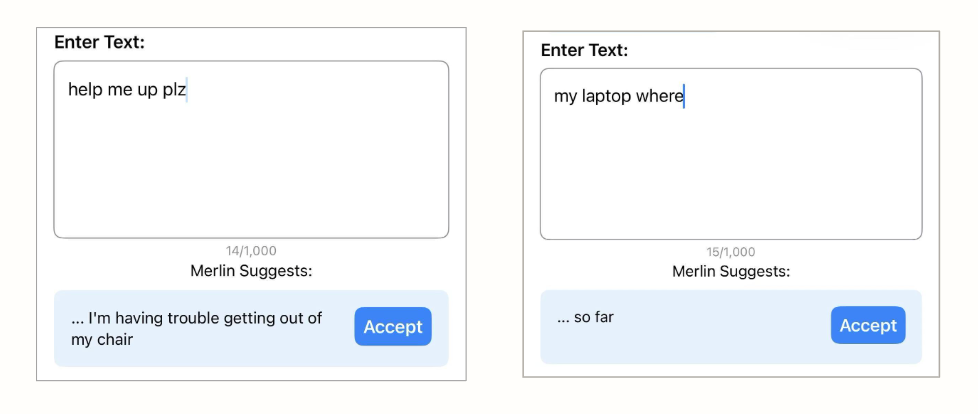
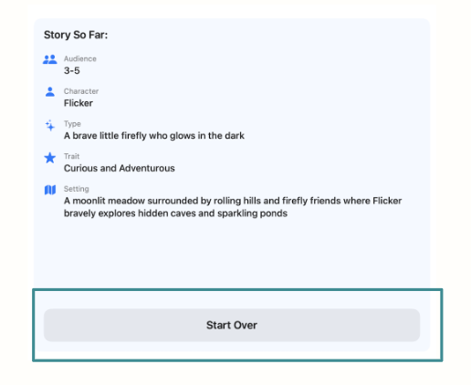
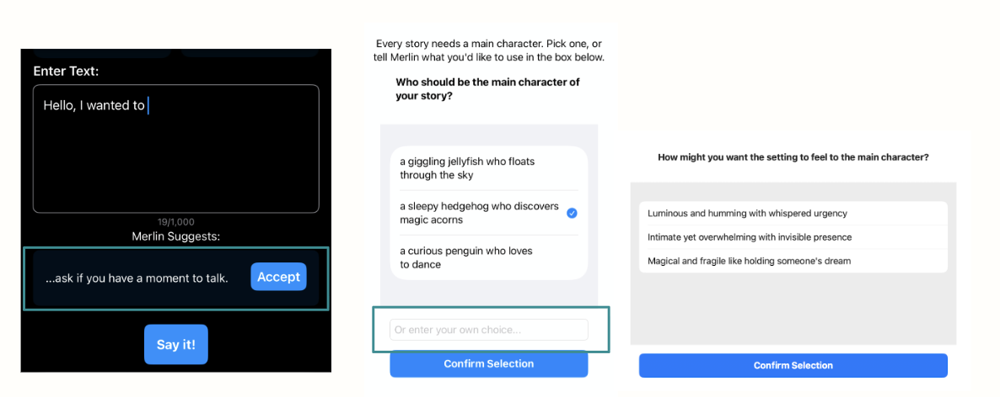
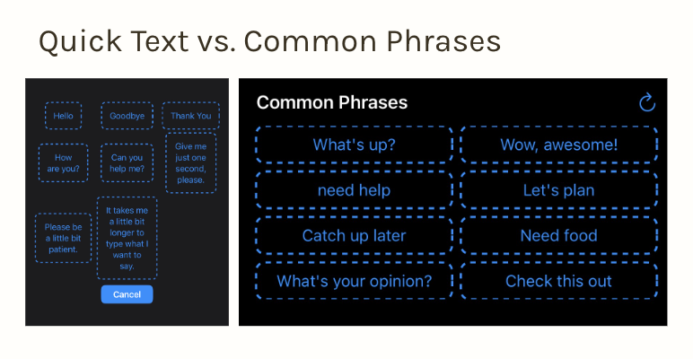
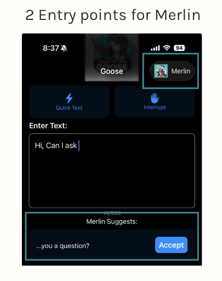

Round 1 · Discovery
Watching real use revealed
where users lost control.
The reframe came directly from watching people use the app. Across think-aloud sessions and a heuristic review, the same pattern surfaced: people hesitated, second-guessed, and avoided features they couldn't predict. In assistive communication, "close enough" changes meaning — users were settling, adjusting to the app instead of expressing themselves through it. The breakdowns were concrete: messages that didn't fully capture what they meant, choices they couldn't undo, and feedback that didn't confirm their actions.
Research Goals
GOAL 01
Identify what the app was getting wrong
Map the usability and accessibility gaps in the existing product.
GOAL 02
Understand who relies on it and how
Understand ALS users, caregivers, and family members — and how their communication needs differ.
GOAL 03
Learn what expressive, confident communication requires
Understand what makes someone feel in control — not just whether the app works.
Original Product Overview

Two Merlin entry points, lookalike phrase tools, and no confirmation that an action had worked.
Core Features
Compose & speak
Text entry, Merlin suggestion bar, "Say it!" TTS output
Quick communication
Quick Text, Common Phrases, Interrupt
Saved content
History, Favorites, Story Builder
Settings
Voice customization, system preferences
Secondary Research
We started with secondary research — stakeholder mapping, competitor analysis, heuristic evaluation, and a literature review of 15 AAC papers — to understand the problem space before testing with users. The literature review was clear that AAC should support a person's expression, not speak for them, which made Merlin's binary accept/dismiss the first thing worth investigating.

Stakeholder Mapping

Competitive Analysis

Literature Review
Primary Research · Think-Aloud Testing
We used simulated users first — non-impaired participants following speech simulation guidelines — because recruiting ALS participants required more time and ethical preparation. Participants completed everyday communication tasks: composing a message with Merlin, navigating between features, and adjusting voice settings.
Synthesis
We used affinity diagramming to synthesize findings from think-aloud testing and secondary research — clustering recurring behaviors, pain points, and emotional reactions to surface patterns around usability, agency, and communication breakdown.

Raw observations

Grouped into themes
Key Insights
Insight 01
Merlin doesn't fully capture what users mean
Users type short or partial input expecting Merlin to understand context. But it over-interprets — "help me up plz" becomes "I'm having trouble getting out of my chair," assuming a physical context the user never mentioned.

→ AI output needs to be grounded in user intent, not assumed from partial input.
Insight 02
Low system clarity reduces confidence and exploration
In Story Builder, a prominent "Start Over" button left users unsure what would reset — the whole session or just the last step. Uncertainty about recovery made users cautious, avoiding features rather than exploring them.

→ Transparent, recoverable interactions are the baseline for user trust.
Insight 03
AI help is valued — but not at the cost of control
The main page offers one suggestion: accept or dismiss. But users wanted to swap tone, adjust intensity, or edit a phrase without regenerating everything. Story Builder gave even less flexibility — fixed options with no room to deviate.

→ Design should support granular refinement, not just accept or reject.
Insight 04
Unclear feedback and overlapping features create hesitation
Quick Text and Common Phrases look identical but behave differently. Merlin appears in two places and generates output in subtly different ways. Users spend time decoding the interface instead of communicating.


→ Reducing ambiguity and consolidating redundant features directly improves communication speed and trust.
This is not just a usability problem.
It's an agency problem.
Users aren't just trying to complete tasks. They need to express themselves in real time — with control over what they say and confidence in how they say it.
Design Direction
Before optimizing for speed or expression,
users need to feel in control.
Based on our research, we explored three strategic directions and chose Safe & Confident Interaction. Testing showed hesitation and uncertainty were the real barriers to communication, so improving clarity and confidence first delivers immediate usability gains and lays the foundation that speed and expression depend on.
Direction A
Lightweight Expression
Deeper control over wording and tone — flexible editing to restore a sense of authorship.
—
Held for later: high impact, but more design and technical effort — a longer-term evolution.
Direction B
Safe & Confident Interaction
Make actions predictable, visible, and reversible — directly answering the hesitation and uncertainty users showed in testing.
Chosen Direction
Direction C
Faster than Speech
Shortcuts, reuse, and conversational momentum to speed up communication.
—
Held for later: valuable, but an optimization layer that needs a stable foundation first.